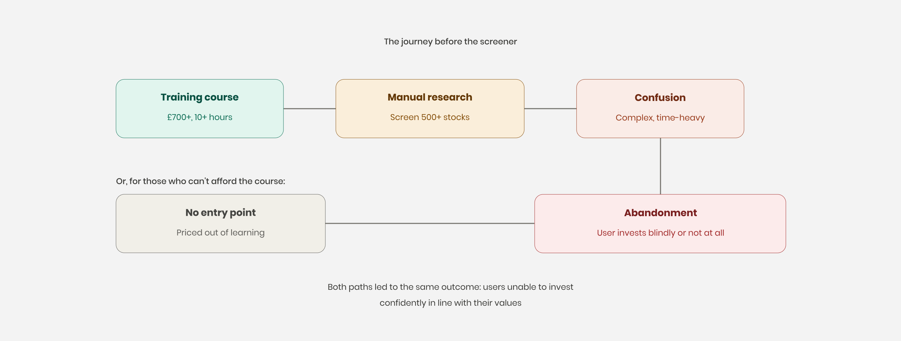
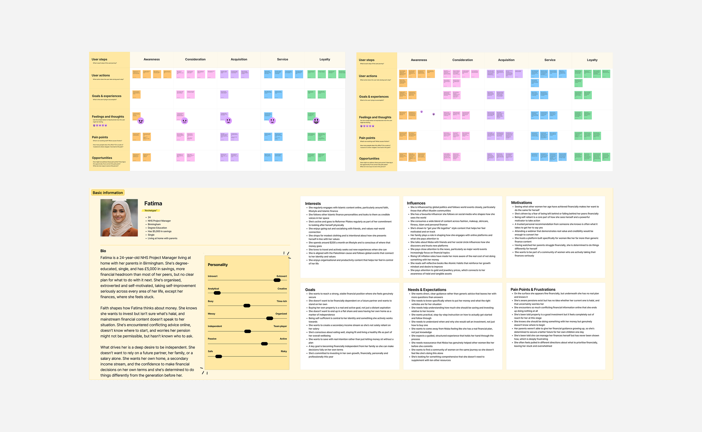
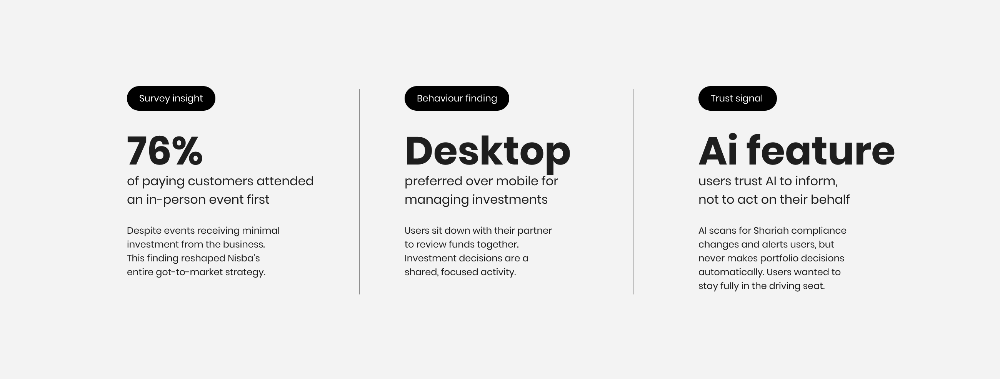
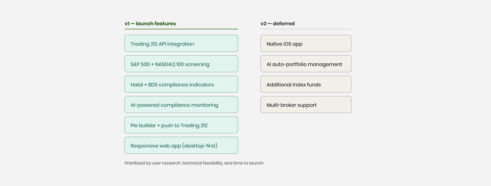
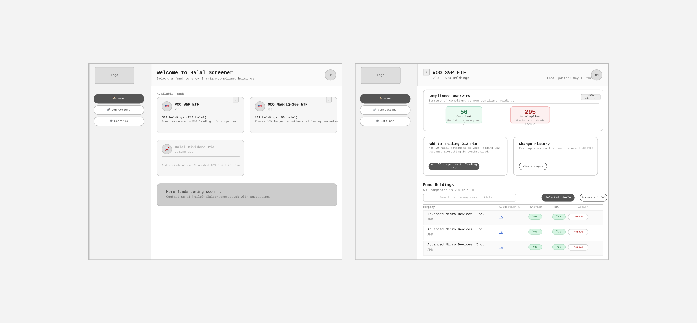
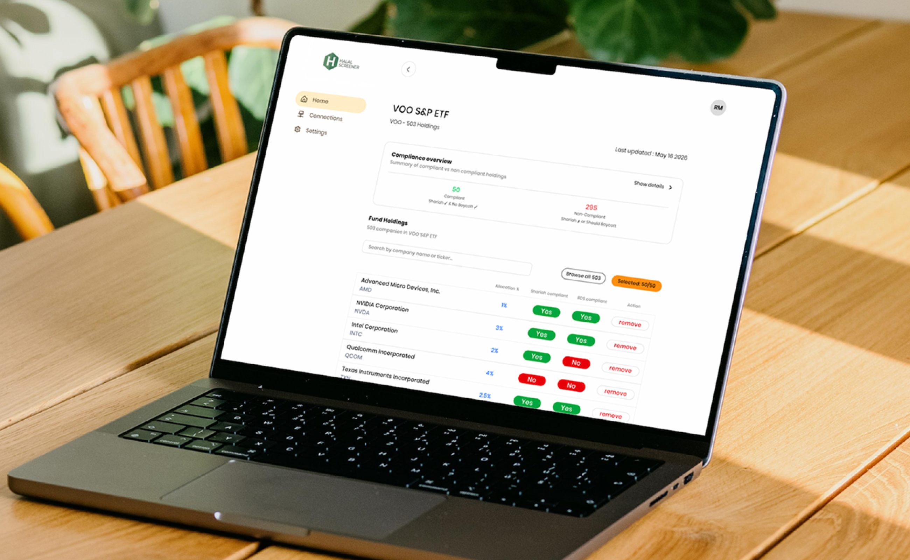

Halal Screener
Designing a halal investment screening tool from scratch, helping Muslim investors quickly identify whether their index fund holdings are Sharia-compliant, without needing hours of manual research or a full training course.

Most Muslim investors are screening in the dark
Nisba is a halal investing education platform that teaches Muslims the fundamentals of Islamic finance. The problem was that after completing the training, users were left entirely on their own. They had the knowledge, but applying it meant manually researching hundreds of companies within index funds like the S&P 500 to determine whether each one was Sharia-compliant. It was slow, complex, and most people simply didn't do it.
For those who couldn't afford the training course or didn't have the time, there was no entry point at all. They wanted to invest in line with their values but had no accessible way to check whether their money was going to compliant businesses.
Nisba wanted to change that. Rather than letting users bounce to other platforms after training, they wanted to build their own ecosystem. A tool that made halal screening fast, clear, and trustworthy, whether you'd completed the course or not.

Starting with the audience, not the feature list
The first phase was discovery. We ran workshops with the Nisba founders to unpack the business goals, user needs, and assumptions behind the idea. Together, we defined a clear problem statement, mapped early user personas, and explored the different journeys people might take when trying to understand whether their investments aligned with their values.
To validate our thinking, we sent a research questionnaire to Nisba's 10,000+ email subscribers. The goal was to understand where people were in their investment journey, the challenges they faced, and whether a screening tool would genuinely solve a meaningful problem.

What the research told us
Two findings shaped the entire product direction.
First, users overwhelmingly preferred to manage their finances on desktop, not mobile. This was counterintuitive: most people use Trading 212 on their phones. But the research showed that investment decisions were a sit-down activity, often done at home with a partner. One person would complete the training and then teach their spouse, and they'd work through their funds together. This meant we needed to design desktop-first, not mobile-first.
Second, we discovered that 76% of people who had purchased from Nisba had attended an in-person event first, despite events receiving minimal investment from the business. This insight reshaped Nisba's entire go-to-market approach beyond the screener.

Defining what to build (and what not to)
After discovery, we ran a feature prioritisation workshop with the Nisba team. We mapped every possible feature against user needs, technical feasibility, and time to launch. The core requirements were clear: the tool needed to integrate with the Trading 212 API so users could connect their existing accounts, screen index funds for halal and BDS compliance, and build Trading 212 pies directly from the platform.
We made a deliberate decision to start with just two index funds, the S&P 500 and NASDAQ 100, rather than trying to cover everything. These were the funds Nisba's audience actually invested in. Depth over breadth.
We also chose to build a responsive web app rather than a native iOS app. The research showed desktop was the primary use case, but users still needed a functional mobile experience for quick checks.

AI that informs, not AI that decides
One finding from the user survey shaped how we implemented AI in the product. Users were explicitly uncomfortable with AI making financial decisions on their behalf. They didn't want automated portfolio changes or algorithmic fund management. They wanted to stay fully in control of their money.
But they did want help. Manually tracking whether companies had changed their compliance status was one of the biggest pain points we heard in research. So we built AI into the screening layer: the tool uses AI to scan index funds against Shariah advisory data from firms like Amanie Advisors and Ratings Intelligence, flagging any changes in compliance status and alerting users when something in their portfolio shifts.
The distinction mattered. AI surfaces the information. The user makes the decision. In a space where trust is everything, that boundary between informing and acting was a deliberate design choice, not a technical limitation.
From flows to wireframes to tested prototypes
The design process started with user flows, mapping the key journeys: sign-up, connecting a Trading 212 account, screening a fund, building a pie, and reviewing changes. From there, we moved into wireframes for the core screens, focusing on information hierarchy and layout before any visual design.
I built a mini design system alongside the wireframes and used Figma AI to generate interactive prototypes quickly. We then tested these prototypes with 10 users from Nisba's community, asking them to complete key tasks and flagging anywhere they got stuck.

What testing changed
Two significant additions came directly from user testing.
The first was a search function. The S&P 500 contains 500 companies. Users wanted to quickly check whether a specific company was halal-compliant, often because they'd seen something on social media or heard about a company in the news. Without search, they were scrolling through hundreds of cards. We added a search bar that let users find any company instantly.
The second was a change indicator. Users wanted to see at a glance whether anything had changed since their last login, so rather than reviewing every company in a fund manually, they could filter to see only updates. Companies change policies, global politics shift, compliance status evolves. The filter surfaced these changes immediately on login.

Building on trust
The visual design for the screener extended the brand experience we had previously developed for Nisba's website. When Nisba first came to us, their platform didn't feel trustworthy for a financial education brand. As part of a separate project, we refined their visual identity to feel more credible and grown-up while keeping their existing logo and colour palette.
The screener inherited that visual foundation, colours, button styles, border treatments, spacing, with a few refinements. We removed serif fonts entirely and went with a purely sans-serif typographic system, better suited to a data-heavy product interface. The goal was that a user moving from the Nisba website into the screener would feel like they were in the same world, just deeper inside it.

The sign-up flow
One of the first problems we identified working with Nisba was their existing sign-up process. Previous products had a confusing double sign-up where users registered, landed in a locked platform, had to scroll down to subscribe, and then gained access. For the screener, we designed a clear, single sign-up flow that captured meaningful data, income levels, investment goals, and a brief biography, without adding friction. This gave Nisba long-term data points to understand who was using the tool and how they engaged over time.

The fund view on mobile
One of the trickiest design challenges was the mobile company card. Each card needed to display the company name, stock market abbreviation, halal compliance status, BDS compliance status, and the ability to add or remove it from a pie. On desktop, space wasn't an issue. On mobile, fitting all of that information into a card without creating excessive scroll depth required careful hierarchy and restraint.

From screen to stage
The Halal Screener launched at Halal Tech Fest, where we also designed event signage and a stand for Nisba to promote the new tool. This gave the product a physical presence alongside its digital launch, creating a moment that felt tangible and real for the community.
Early results
Within the first week of early access at $4.99/month, the screener had 60 sign-ups, before the product had been promoted to Nisba's full email list. User feedback has been overwhelmingly positive, with no negative responses recorded through the in-app feedback board.
Most users are accessing the tool on desktop, validating the research finding that shaped the entire design direction. Users have already begun using the screener to identify and remove non-compliant funds from their Trading 212 pies.
The product hasn't had its full global launch yet. Nisba are running an early access period to gather feedback, identify bugs, and refine the experience before a broader release to their 10,000+ subscriber base.
Beyond the screener itself, the project has deepened the client relationship significantly. The Nisba founders have offered to provide a video testimonial and have referred Studio Dheet to other companies, a strong signal that the work delivered genuine value.
